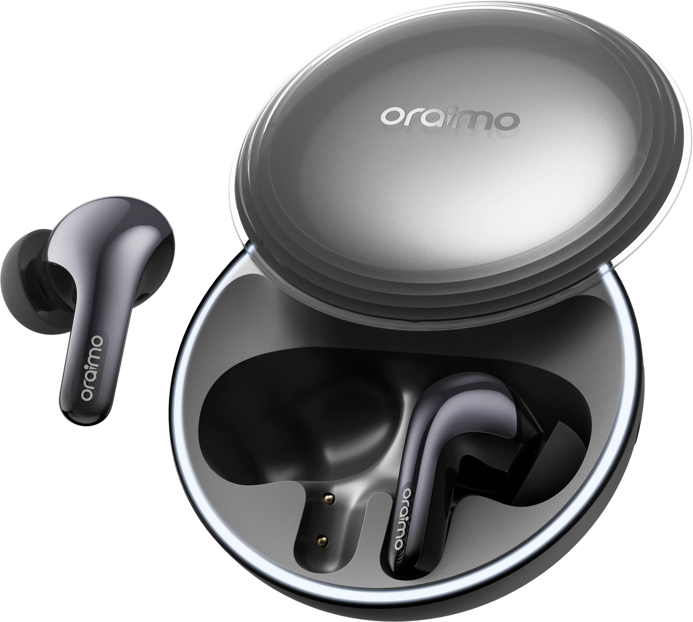

Lagos is loud
oraimo · spacebuds 2

Noise off
Lagos
is
loud.
Horns. Engines. Everybody talking at once.
Noise
off.
Lagos is loud.
Noise level
94 dB
Noise off.
52 dB hybrid noise cancelling.
Noise level
94 → 42 dB